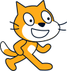

Scratch · Before Balloon Pop

Click the cat. It meows.
Events · the yellow blocks
when flag clicked
Every script with this hat starts at once. Use it to get the game ready: Score back to 0, the sprite back to normal.
when this sprite clicked
This script starts every time you click that sprite on the stage. Click it five times, and it runs five times.
The round top is called a hat. Every script starts with one, and blocks snap on underneath.
Sound · the pink blocks
start sound [Meow v]
Every library sprite comes with its own sound.
No sound? Check the laptop's volume. To add more sounds, open the Sounds tab at the top left.
when this sprite clicked start sound [Meow v] go to (random position v)
It works if every click, the cat meows and jumps somewhere new.
when this sprite clicked is in Events (yellow). go to random position is in Motion (blue).
Looks · the purple blocks
A sprite can have more than one picture. next costume switches to the next one, and after the last it goes back to the first.
next costume
The cat has two costumes, so it looks like it's walking. Today's balloon has three: three colours.
Looks · the purple blocks
set size to (100) %
100 is normal size. Use it to put the sprite back to normal.
change size by (-10)
A minus number makes it smaller. Type 10 instead of -10 and it gets bigger.
A size change stays until something changes it back. That's why the green flag sets the size to 100.
when flag clicked set size to (100) %
when this sprite clicked next costume change size by (-10)
It works if every click, the cat changes costume and gets smaller, and the green flag makes it big again.
Both blocks are in Looks (purple). Your Try it 1 script still works too: one sprite can have lots of scripts.
Variables · the orange blocks
when flag clicked set [Score v] to (0)
The green flag starts Score at 0.
change [Score v] by (1)
Adds 1 every time it runs.
In each orange block, click the little arrow and pick Score.
Now: Balloon Pop
when this sprite clicked
start sound [Meow v]
next costume
change size by (-10)
The same blocks, on a balloon instead of the cat. Now open the Balloon Pop slides: Set up deletes the cat, and your practice scripts go with it.